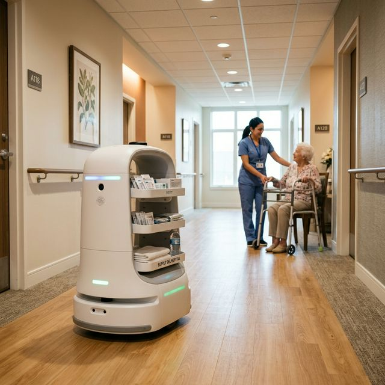

Agentic Control Layer
Purpose-built for agentic automation instead of classical scripted workflows.
Machine superintelligence built for frontline care at scale
Caregivers lose 3+ hours daily to non-clinical tasks—the margin killer no one's fixing.
Structural labor crisis. Hiring won't solve this.
Every 8-min errand pulls staff from residents. It's a workflow failure.

Flat OpEx beats burnout-driven labor volatility.
Robots handle logistics. Care teams stay in care.
3+ hours recovered daily. Better retention, lower burnout.
Fleet orchestration, not isolated robots.
Overtime, agency, churn—costs spike fast.
Predictable infrastructure spend. Less agency dependence.
600+ hospitals already run this. Senior care is next.
3.2x ROI in early deployments.
Win one site. Replicate to 10, then 50.
Purpose-built for agentic automation instead of classical scripted workflows.
Not a point tool. Carbon combines orchestration, intelligence, and deployment in one system.
Hardware-agnostic and form-factor-agnostic deployment across application families.
Each deployment improves control, speed, and rollout economics across the entire platform.